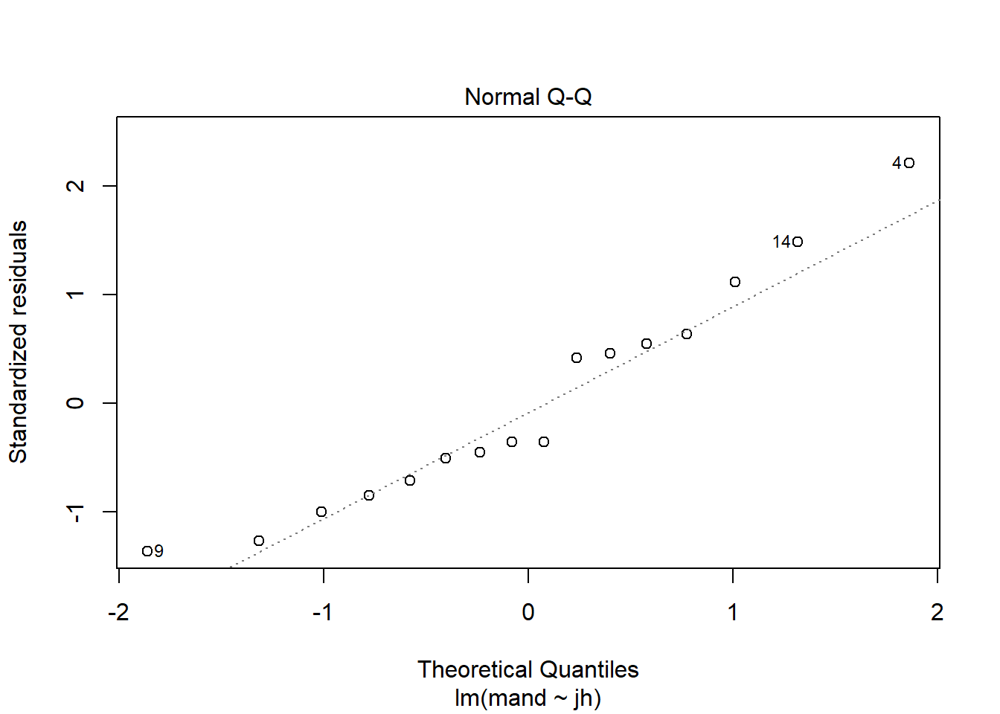
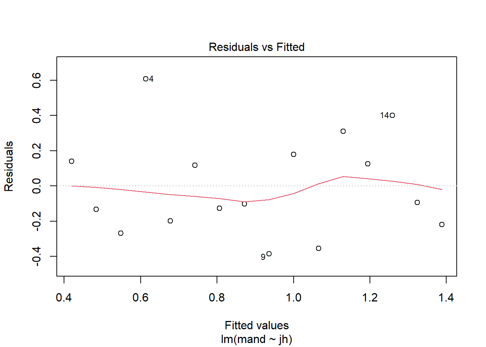
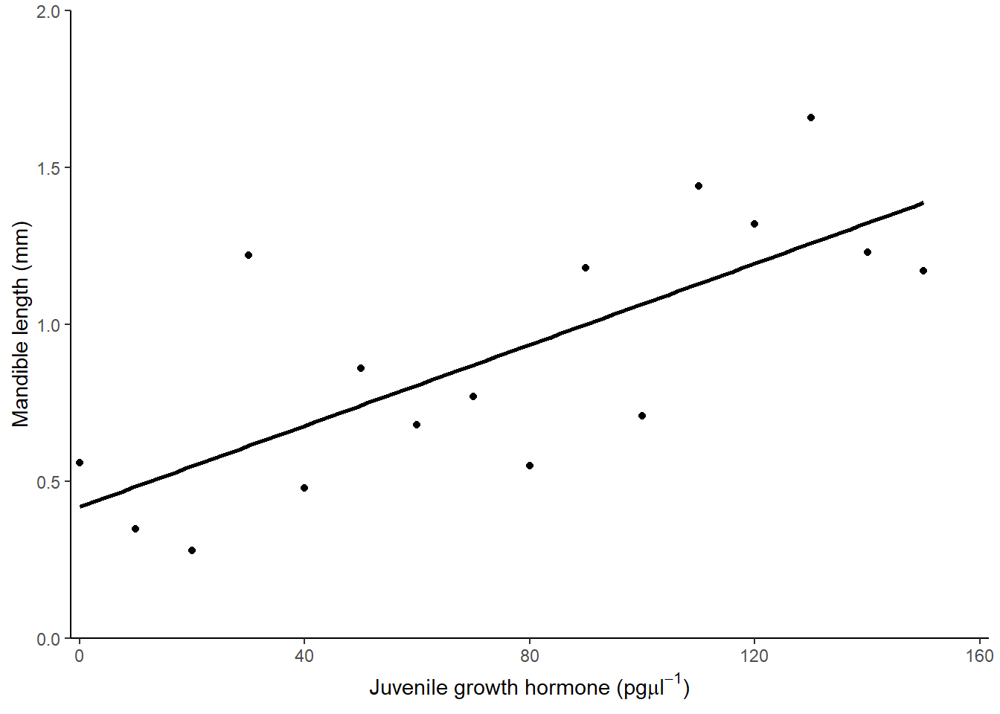

Chapter 3 Single linear regression
3.1 Introduction to the example
This is a test you have probably carried out before.
The concentration of juvenile hormone in stag beetles (Lucanus cervus) is known to influence mandible growth. Groups of stag beetles were injected with different concentrations of juvenile hormone (pg\(\mu\)l-1) and their average mandible size (mm) determined. The data are in stag.txt.
We will import the data with the read_table2() function from the readr package and plot it with ggplot() from the ggplot2 package. Both packages are part of the tidyverse.
Juvenile hormone is has been set by the experimenter and mandible size has decimal places and is something we would expect to be normally distributed. Visualising our data before any further analysis is usually sensible. In this case, it will help us determine if any relationship between the two variables is linear.
 The relationship between them looks roughly linear. So far, common sense suggests the assumptions of regression are met.
The relationship between them looks roughly linear. So far, common sense suggests the assumptions of regression are met.
3.2 Applying and interpreting lm()
The lm() function is used to build the regression model
This can be read as: fit a linear of model of mandible size explained by juvenile growth hormone concentration.
Printing mod to the console will reveal the estimated model parameters (coefficients) but little else:
mod
#
# Call:
# lm(formula = mand ~ jh, data = stag)
#
# Coefficients:
# (Intercept) jh
# 0.41934 0.00646\(\beta_{0}\) is labelled “(Intercept)” and \(\beta_{1}\) is labelled “jh”. Thus the equation of the line is:
More information including statistical tests of the model and its parameters is obtained by using summary()
# examine it
summary(mod)
#
# Call:
# lm(formula = mand ~ jh, data = stag)
#
# Residuals:
# Min 1Q Median 3Q Max
# -0.3860 -0.2028 -0.0975 0.1503 0.6069
#
# Coefficients:
# Estimate Std. Error t value Pr(>|t|)
# (Intercept) 0.41934 0.13943 3.01 0.0094 **
# jh 0.00646 0.00158 4.08 0.0011 **
# ---
# Signif. codes: 0 '***' 0.001 '**' 0.01 '*' 0.05 '.' 0.1 ' ' 1
#
# Residual standard error: 0.292 on 14 degrees of freedom
# Multiple R-squared: 0.543, Adjusted R-squared: 0.51
# F-statistic: 16.6 on 1 and 14 DF, p-value: 0.00113The “Coefficients:” table gives the estimated \(\beta_{0}\) and \(\beta_{1}\) again, this time with their standard errors and tests of whether the estimates differ from zero. The estimated value for the intercept is 0.419 \(\pm\) 0.139 and this differs significantly from zero (\(p\) = 0.009). The estimated value for the slope, 0.006 \(\pm\) 0.002, also differs significantly from zero (\(p\) = 0.001).
The three lines at the bottom of the output gives information about the fit of the model to the data. The “Multiple R-squared” gives the proportion of the variance in the response which is explained by the model. In our case, 0.543 of the variance in mandible length is explained by the model and this is a significant proportion of that variance (\(p\) = 0.001).
For a single linear regression, the p-value for the model and the p-value for the slope are the same. This is also true for linear models in the form of a two-sample t-test but not the case for other linear models.
3.3 Getting predictions from the model
The predict() returns the predicted values of the response. To add a column of predicted values to the dataframe:
This requires creating a data frame of the x values from which you want to predict
Note that the name and type of value of explanatory variable must be the same as it is in the model
3.4 Link to Chapter 2.1
Replacing the terms shown in Figure 2.1 with the values in this example gives us 3.1.

Figure 3.1: The annotated model with the values from the stag beetle example. The measured response values are in pink, the predictions are in green, and the residuals, are in blue. One example of a measured value, a predicted value and the residual is shown for a Juvenile hormone of 130 pg\(\mu\)l-1. The estimated model parameters, \(\beta_{0}\) and \(\beta_{1}\) are indicated. Compare to Figure 2.1.
3.5 Checking assumptions
plot(mod, which = 2)
plot(mod, which = 1)
shapiro.test(mod$res)
#
# Shapiro-Wilk normality test
#
# data: mod$res
# W = 0.9, p-value = 0.4
3.6 Creating a figure
ggplot(data = stag, aes(x = jh, y = mand)) +
geom_point() +
scale_x_continuous(expand = c(0.01, 0),
limits = c(0, 160),
name = expression(paste("Juvenile hormone (pg",
mu,
l^-1,
")"))) +
scale_y_continuous(expand = c(0, 0),
limits = c(0, 2),
name = "Mandible length (mm)") +
geom_smooth(method = lm, se = FALSE, colour = "black") +
theme_classic()
3.7 Reporting the results
There was a significant positive relationship between the concentration of Juvenile hormone and mandible length (\(\beta_{1}\pm s.e.\): 0.006 \(\pm\) 0.002; \(p\) = 0.001). See figure 3.2.

Figure 3.2: Relationship between the concentration of Juvenile hormone and mandible length.